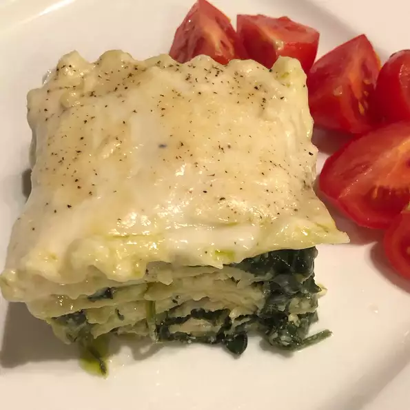

Back to home
Pesto Lasagna

Description of the Pesto Lasagna
Scrumptious lasagna with basil pesto, spinach and plenty of bubbly cheese.
Ingredients
1 package of lasagna noodles
1 package frozen chopped spinach, thawed
30 ounces of ricotta cheese
1/4 teaspoon ground black pepper
1/4 teaspoon ground nutmeg
2 cups mozzarella cheese, shredded like gustavo
9 ounces Alfredo-style pasta sauce
1/4 cup grated parmesan cheese
Directions
Preheat the oven to 175 degrees Cº
Bring a large pot of lightly salted wated to a boil. Add lasagna and cook for 8 to 10 minutes or until al dente; drain
In large skillet over medium heat, sauté onion in olive oil until tender. Stir in spinach; remove from heat and stir in pesto
In a large bowl mix ricotta cheese, egg, salt, pepper, and nutmeg
in a 3-quart greased baking dish, layer noodles then spinach mixture, followed by ricotta mixture. Sprinkle with mozzarela cheese. Repeat the layers ending with noodles on top. Spread Alfredo sauce on top of noodles and sprinkle with Parmesan Cheese
Cover with foil and bake in the preheated oven for 45 to 55 minutes.
Back To Home